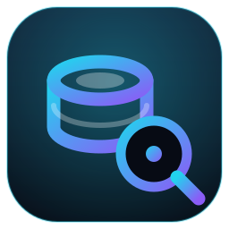
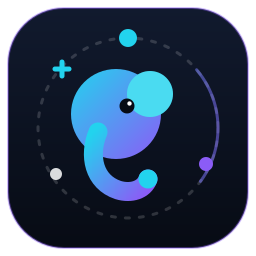
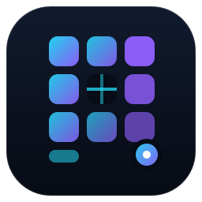
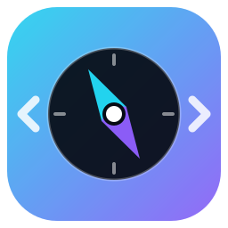

4 modern SVG variations · cyan #22d3ee → violet #8b5cf6 on void #070b14 · Nothing has been replaced yet — reply with your pick (e.g. “V1, but…”) and I’ll roll it out to app icon, header, favicon + README.
Database cylinder in brand gradient with a magnifier badge overlapping. Reads instantly as “database explorer”, works at 16px favicon size, matches the current dark UI best.

Abstract Postgres-elephant head + trunk in gradient, wrapped in a satellite orbit with data nodes. Friendliest and most “Postgres”. Slightly busier at 16px.

Letter “P” built from app-grid tiles with a table-grid cutout and explorer cursor dot. Most minimal / SaaS-like. Cleanest at small sizes, but least “database”.

Full-gradient tile with compass needle + </> SQL brackets. Loudest on the taskbar/dock, strongest “explorer” metaphor. Only bright-background option — pops, but differs from the dark UI.
